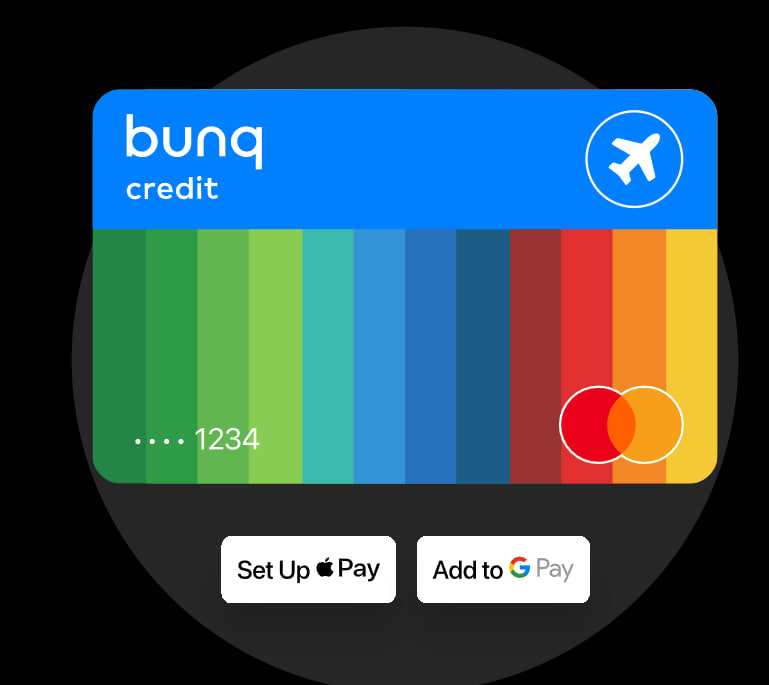
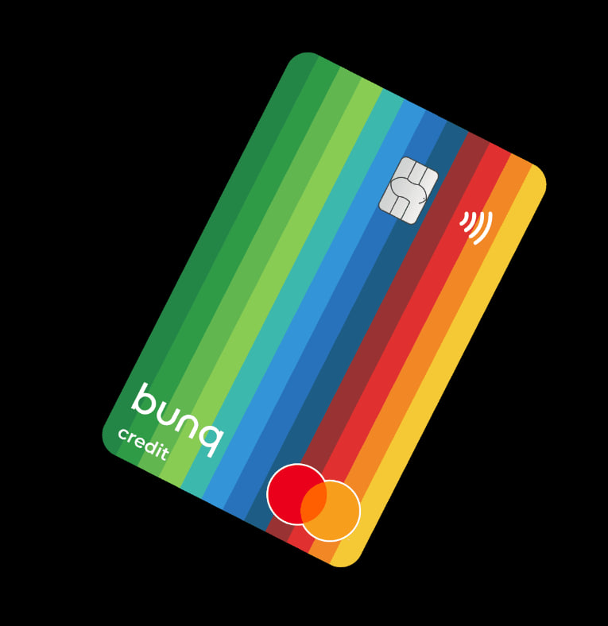
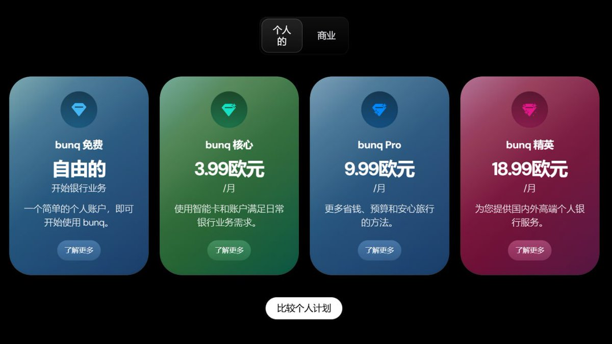
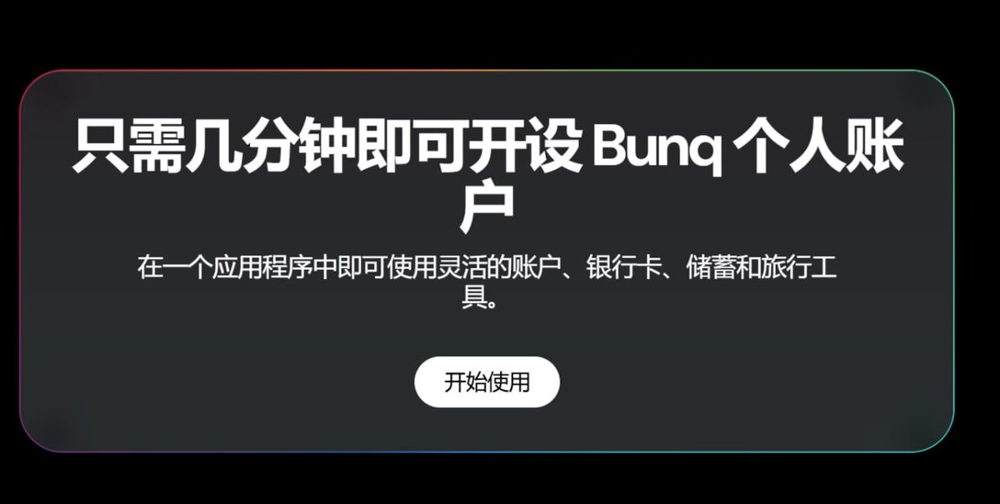

Aoi M
@aoim33
以下推文中提到的所有功能是需要付款9.99欧元每月的月费之后才能实现的
同时每一笔跨境汇款需要扣除5欧元的手续费
并且强制要求提供税号，如果没有税号则会在60天内关户
而对于描述的英国银行，chase 和 zopa 在没有信用记录的前提下会被拒绝开户，而其他的银行如果没有实际的转运地址，在触发寄送实体卡进行地址，验证了步骤之后，没有使用实体卡激活账户之前账户无法使用，也无法积累信用分，因此所有其他的银行账户的注册都自此化为泡影
在辨别推特上的信息流之前，请各位擦亮眼睛，以免上当




五道口WUDAOKOU |X联盟
@wdknews
已经拿到 英国电信的小伙伴 可以区注册 这家 bunq数字银行
bunq是一家总部位于荷兰的欧洲第二大数字银行（用户超过2000万）
核心特点：
1.多子账户系统：最多可开25个独立账户，每个都有自己的IBAN（支持荷兰、德国、法国、西班牙、比利时、意大利等本地IBAN） https://t.co/Ep2auMVBhL https://t.co/j9MTDuSkhC